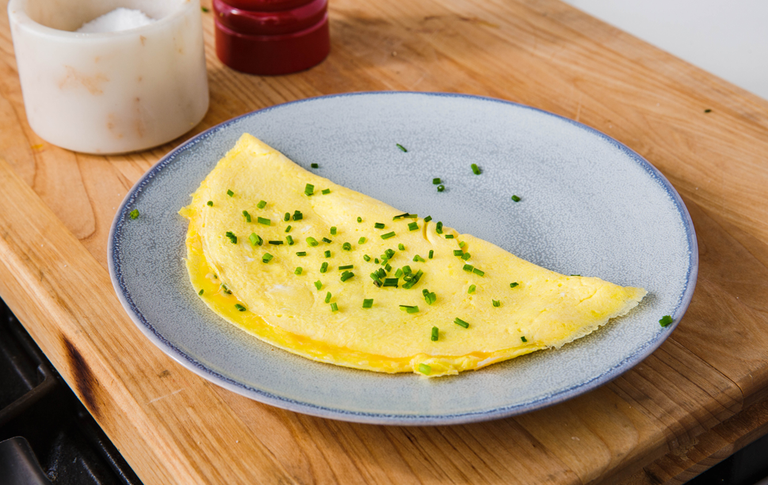

Omelette

Description
An omelette is a dish made from beaten eggs fried in a frying pan with butter or oil.
It's common to fold omelette around fillings such as cheese, mushrooms, onions, etc.
Being easy and fast to make, nutricious, and almost infinitely customizable, omelettes are
a great choice for a breakfast, if you're looking for something quick and satisfying.
Ingredients
- Eggs (2)
- Water (30ml)
- Salt & pepper (pinch)
- Butter or oil
- Filling ingredients of your choice
Note: Instead of water, you can also use
milk or cream
Steps
- Mix and whisk eggs, water (or milk), salt and pepper.
- Into a frying pan, pour in a small amount of oil or
melt a piece of butter just enough to cover the bottom of the pan.
Heat over a medium heat.
- Pour in the egg mixture. By tilting, rotating, and using a spatula,
adjust the shape of the omelette: try to keep it nice and plain.
- When the mixture is still moist but rigid enough to keep its shape,
cover half of omelette with fillings. With spatula, fold over unfilled side
onto filled half.
- Cook for a minute, then slide omelette onto a plate.